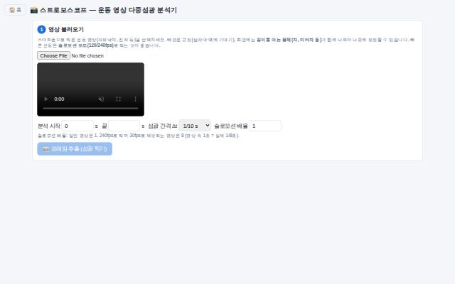
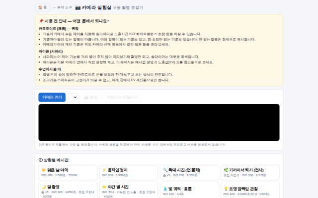
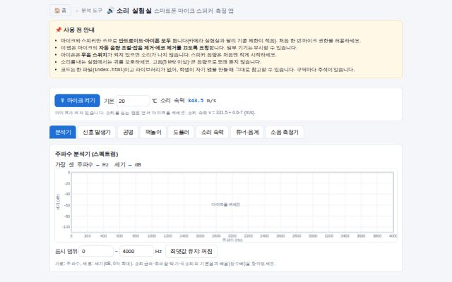

← 홈으로
🧰 분석 도구
실험 영상·데이터 분석 도구
도구

📸
스트로보스코프
운동 영상을 다중섬광사진으로 합성하고 위치를 찍어 x–t·v–t 그래프와 가속도를 분석 (Tracker 축소판)
조절
영상 구간·섬광 간격·보정 거리
관찰
다중섬광 사진과 x–t·v–t 그래프
✔ 완료

📷
카메라 실험실
스마트폰 카메라의 노출시간·ISO·화이트밸런스·초점·줌을 직접 조절하고, 확대·야간 별 사진 등 예시값을 적용해 촬영
조절
셔터 속도·ISO·색온도·초점 거리·줌
관찰
노출값(EV)과 사진 밝기·번짐·잡음의 변화
✔ 완료

🔊
소리 실험실
마이크·스피커로 주파수 분석, 공명, 맥놀이, 도플러 효과, 소리 속력, 튜너, 소음(dB)을 측정하는 8탭 앱 (학생 앱 제작 시범용)
조절
음원 주파수·관 길이·두 음의 차·움직이는 속력
관찰
스펙트럼·공명 곡선·맥놀이·도플러 주파수 변화 그래프
✔ 완료